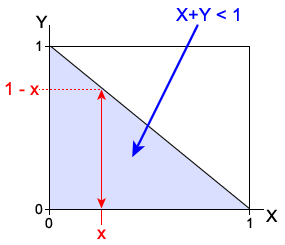

Probabilities for events
Events about pairs of continuous random variables, such as “\(X+Y \gt 1\)” or “\(X \gt 5 \textbf{ and } Y \lt 3\)” correspond to regions of the x-y plane.
The probability for any such event is the volume under the joint probability density function above this region, as illustrated by the example on the previous page. This can be evaluated as a double-integral of the joint pdf over the corresponding values of the two variables.
Probabilities as integrals
The probability of any event \(A\) about the variables \(X\) and \(Y\) can be evaluated as
\[ P(A) \;\;=\;\; \iint\limits_{(x,y) \in A} f(x,y)\;dx\;dy \]Care must be taken with the integration limits for the inner and outer integrals when evaluating this integral — for some events, the limits for the inner integral must involve the outer integral's variable.
Example
The random variables \(X\) and \(Y\) have joint probability density function
\[ f(x,y) \;=\; \begin{cases} x+y & \quad\text{if }0 \lt x \lt 1 \text{ and }0 \lt y \lt 1 \\ 0 & \quad\text{otherwise} \end{cases} \]What is the probability that \(X+Y\) will be less than one?
The region of the x-y plane for which \(f(x,y)\) is positive and \((X+Y \lt 1)\) is as shown in the diagram below.

To find the limits of integration, note that for any value of \(X\) such as \(x\), the event requires that \(Y < 1-x\) so although the outer integral is for \(x\) between 0 and 1, the inner integral must be from 0 to \(1-x\).
\[ \begin{align} P(X+Y \lt 1) \;&=\; \int_0^1 \int_0^{1-x} (x+y) \;dy \; dx \\ \;&=\; \int_0^1 \left[xy+\frac{y^2}{2}\right]_{y=0}^{y=1-x} \; dx \\ \;&=\; \int_0^1 \left(x - x^2 + \frac{(1-x)^2}{2}\right) \; dx \\ \;&=\; \int_0^1 \left(\frac 1 2 - \frac{x^2}{2}\right) \; dx \\ \;&=\; \left[\frac x 2 - \frac{x^3}{6}\right]_0^1 \;=\; \frac 1 3 \end{align} \]